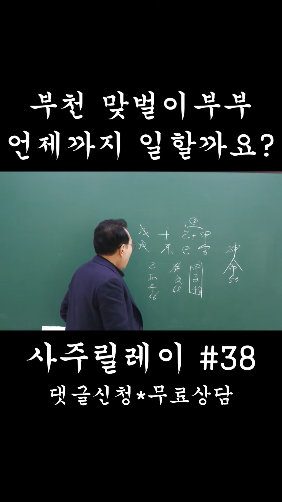

남촌물상TV 전체 문서 › Shorts S0174
[구독자무료상담]#38 부천 맞벌이부부, 언제까지 일할수있을까요?

| 문서 번호 | S0174 (Shorts (쇼츠)) |
|---|---|
| 영상 URL | https://www.youtube.com/watch?v=FeY0BhvDoOU |
| 영상 ID | FeY0BhvDoOU |
| 게시일 | 2026-04-13 |
| 길이 | 0:49 (49초) |
| 조회수 | 1,401회 (수집 시점 기준) |
| 카테고리 | Education |
| 자막 | ko (자동생성) |
| 수집 시각 | 2026-08-30 19:08 (KST) |
영상 설명 (YouTube 설명 원문 그대로)
======구독자 무료사주 신청방법======
아래양식으로 답글로 신청해주세요
한분의 사연을 추첨하여 다음주 숏츠 무료사주상담으로 나갑니다
1.양/음력
2.남자/여자
3.생년월일시
4.사는지역(ex 경기도 안양시)
5.현재상황을 자세하게 기술해주시고 및 궁금한것 1가지만 질문주세요
전체 자막 (19구간 · 타임스탬프 클릭 시 해당 장면으로 이동)
[0:00]자, 부천산는 53세 여자 막벌리
[0:02]봅니다. 내가 하는 일이 정년까지 할
[0:06]수가 있을까요? 자,이 사주는
[0:08]신금일주로 재물이 각기합 을목이에요.
[0:12]그래서 보통 이건 대기업 자리인데
[0:15]중소 기업에 관련된 일을 하거나 그
[0:17]중소 기업에 하청할 수 있는 회사를
[0:19]다닐 수 있는 회사고 직업이고
[0:21]그다음에 갑자의 40% 각에 풀려서
[0:25]뭔가는이 재물이 좀 오는 대운이에요.
[0:28]그래서 본인이 재물의 관계된 것을
[0:30]신경을 쓰고 부동산의 관계 생기면
[0:32]좋고 개해여 대운이 올 때 그 기유
[0:36]기후년 56세까지는이
[0:39]자기가 다니지는 회사를 다닐 수 있기
[0:40]때문에 그때까지 준비하시고 사후에
[0:43]어떤 추후에 어떠한이 무토에 나무를
[0:46]심 것인가 나중에 부동산을 소유한게
[0:49]좋습니다. 입니다.
칠판 원국 판독 (영상 프레임을 AI가 시각 판독 · 원판 대조 필수)
구분 불명
천간
甲
천간
己
천간
戊
천간
戊
지지
寅
지지
巳
지지
戌
지지
午
판독 신뢰도: 중간
판독 노트: 부천 맞벌이 판, 神殺 53, 대운 역행 甲子42 박스~辛酉72, 乙+甲 표기 · 시점 0:22 · 해당 장면 보기↗
자막은 YouTube에서 제공하는 한국어 자동음성인식(ASR) 트랙의 원문입니다. 고유명사·한자 용어·숫자 표기에 자동인식 특유의 오류가 있을 수 있어, 원문을 가능한 한 그대로 보존했습니다. 위에 칠판 원국 판독 섹션이 있는 영상은 화면 프레임을 AI가 시각 판독한 것으로 신뢰도 표기를 확인하고, 없는 영상은 화면 도표가 문서에 포함되지 않습니다.